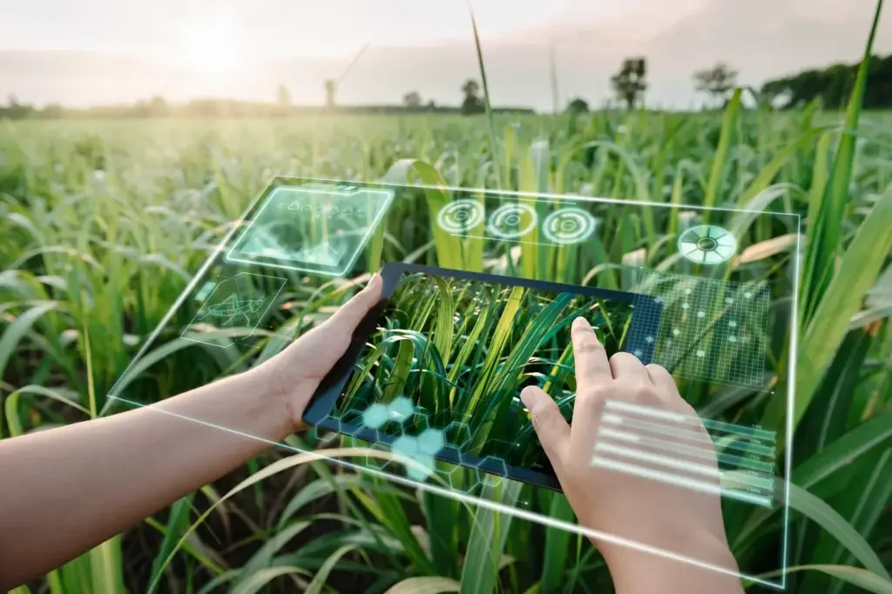
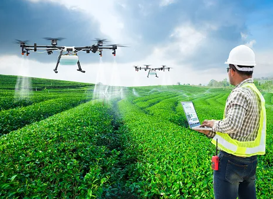
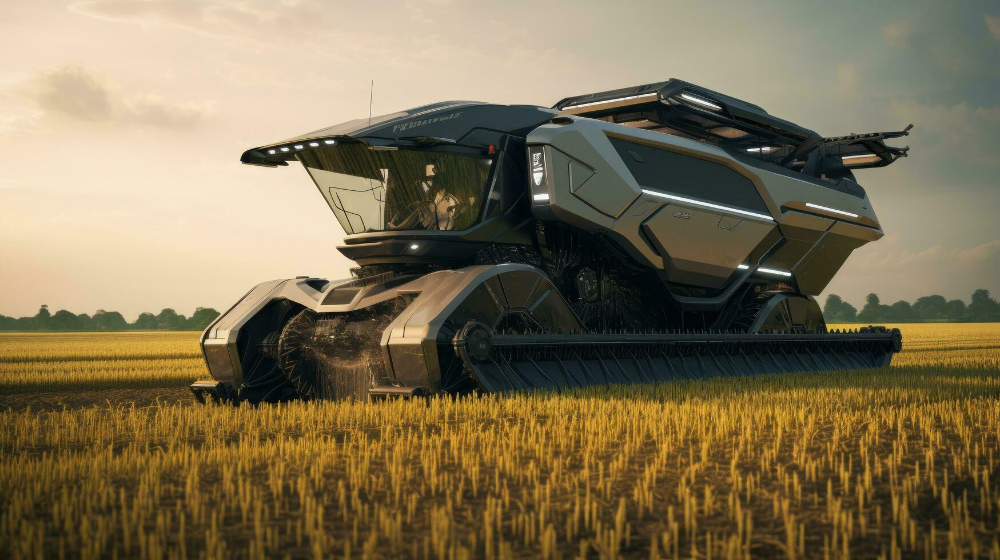
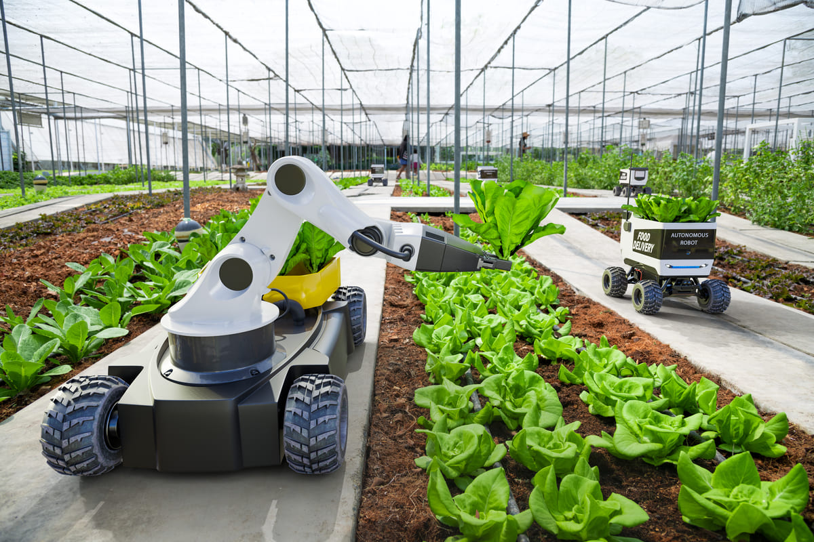

Tecnologias Agrícolas
Agricultura moderna utiliza tecnologia avançada para aumentar eficiência e produtividade. Máquinas automatizadas, sensores IoT e culturas geneticamente modificadas melhoram manejo de culturas e reduzem impactos ambientais. Tecnologia também transforma distribuição e comercialização de produtos agrícolas, conectando diretamente produtores a consumidores. Desafio é equilibrar avanços tecnológicos com práticas sustentáveis e éticas, assegurando benefícios a longo prazo para agricultores e meio ambiente.




Tecnologia na agricultura refere-se ao uso de inovações e ferramentas para melhorar a eficiência, a produtividade e a sustentabilidade das práticas agrícolas. Isso pode envolver uma ampla gama de tecnologias e metodologias, incluindo:
1. **Maquinário e Equipamentos Avançados**: Tratores, colheitadeiras e semeadoras modernas que são mais eficientes e automatizados. Tecnologias como a agricultura de precisão utilizam GPS e sensores para otimizar a aplicação de fertilizantes e pesticidas.
2. **Drones e Imagens de Satélite**: Drones e satélites fornecem imagens aéreas detalhadas que ajudam os agricultores a monitorar a saúde das plantas, identificar pragas e doenças, e gerenciar recursos de maneira mais eficaz.
3. **Sistemas de Irrigação Inteligentes**: Tecnologias como a irrigação por gotejamento e sensores de umidade do solo permitem uma gestão mais eficiente da água, reduzindo o desperdício e melhorando a saúde das plantas.
4. **Biotecnologia**: A engenharia genética e outras técnicas biotecnológicas são usadas para criar culturas mais resistentes a doenças, pragas e condições climáticas adversas, além de melhorar o rendimento e a qualidade dos produtos.
5. **Automação e Robótica**: Robôs e sistemas automatizados podem realizar tarefas como plantio, colheita e controle de qualidade, aumentando a eficiência e reduzindo a necessidade de trabalho manual.
6. **Sensores e IoT (Internet das Coisas)**: Sensores conectados à internet podem monitorar variáveis como temperatura, umidade e condições do solo em tempo real, permitindo uma gestão mais precisa das operações agrícolas.
7. **Software de Gestão Agrícola**: Plataformas e aplicativos ajudam os agricultores a gerenciar suas operações, desde o planejamento e monitoramento até a análise de dados e otimização dos recursos.
8. **Tecnologias de Conservação**: Métodos e equipamentos que ajudam a conservar o solo, a água e outros recursos naturais, promovendo práticas agrícolas mais sustentáveis.
Essas tecnologias visam tornar a agricultura mais produtiva, eficiente e sustentável, enfrentando desafios como o aumento da demanda por alimentos, mudanças climáticas e escassez de recursos.